- Cortar el ajo, 2 pimientos, y la media cebolla.
- Caramelizar los vegetales. Cubrir el fondo de la sartén con aceite de oliva. Echar las verduras. Primero, dejar a fuego medio hasta que se hagan las verduras.
- Poner el fuego a fuego bajo. Echar el azúcar y el vinagere en las verduras. Dejar caramelizar 40 minutos.
- Cuando al caramelizado le queden 10 minutos, cortar otro pimiento en trozos como se muestra en la foto. Hacer en otra sartén con un poco de aceite y un poco de sal.
- Poner el caramelizado encima del pan.
- Cortar los filetes para que quepan en el pan. Salar. Cubrir el fondo de la sartén con aceite de oliva. Ir echando los filetes a fuego medio-alto. Cuando se da la vuelta, poner un triangulito de queso para que se derrita un pcoc. Sacar y poner en el pan encima del caramelizado.
- Poner el pimiento encima de la ternera. Mojar un poco la parte de arriba del pan en el aceite donde se ha freído la ternera. Carrar el bocadillo y a comer!
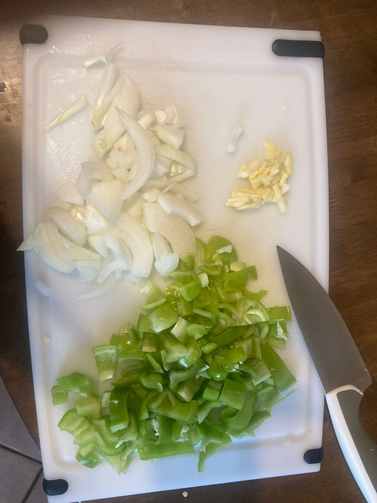
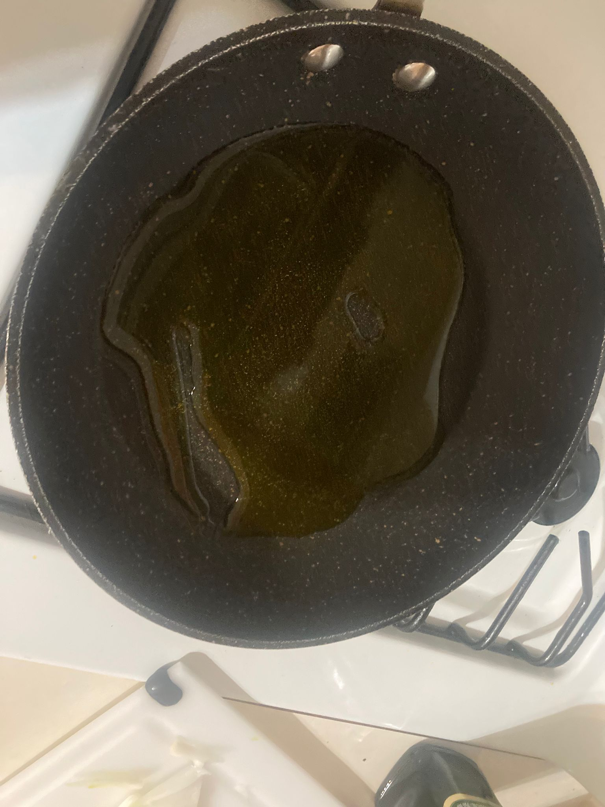 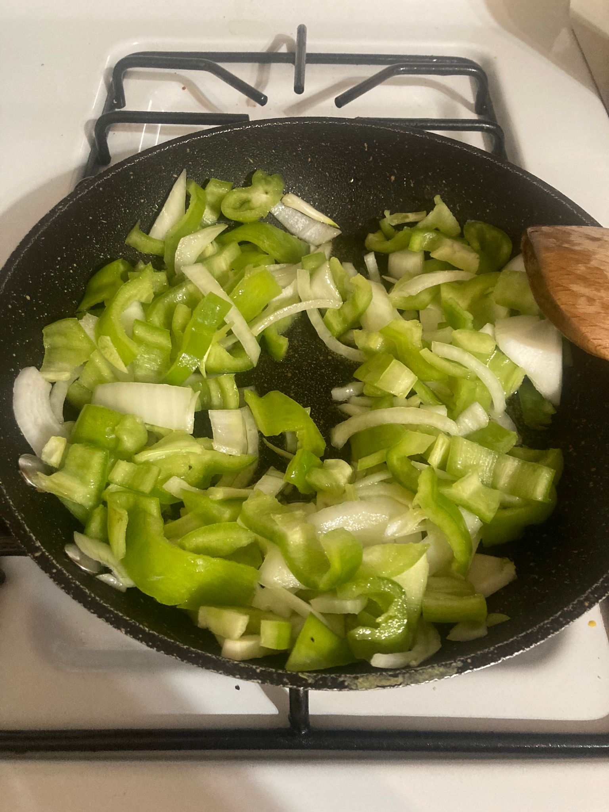
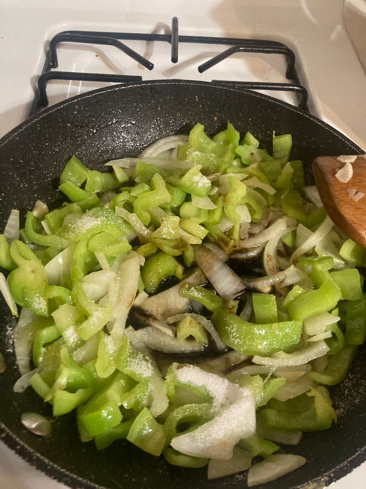 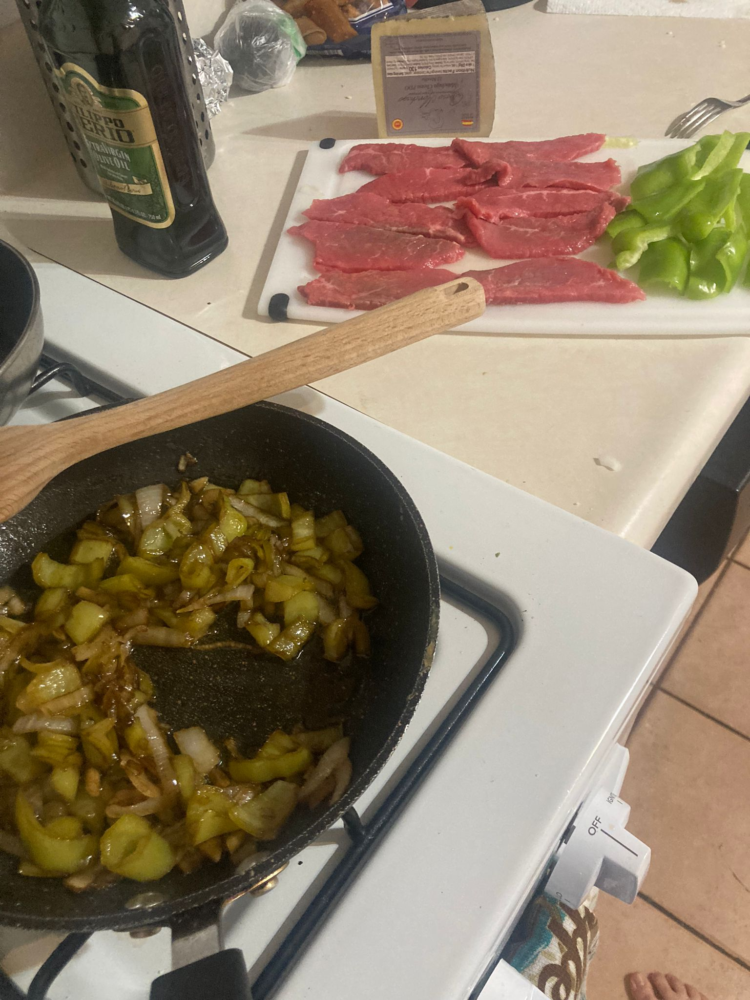
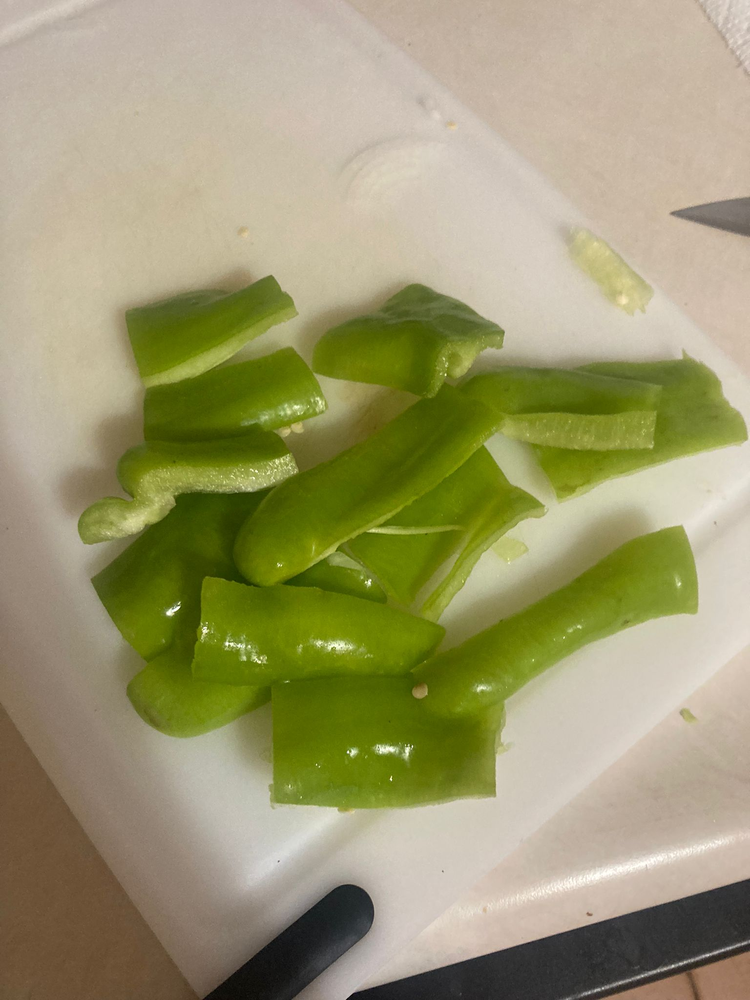 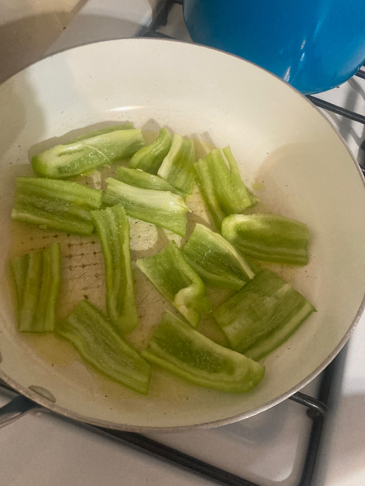 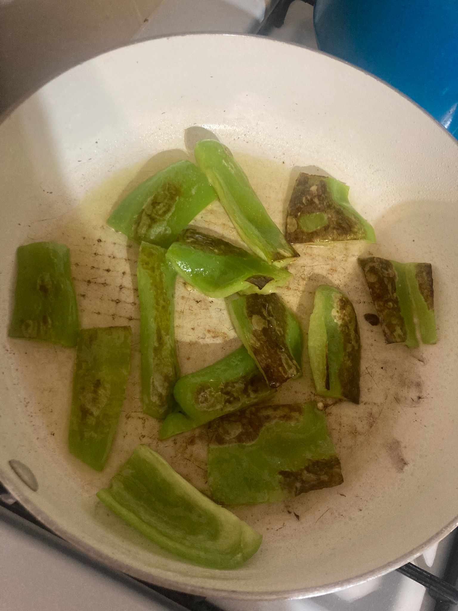
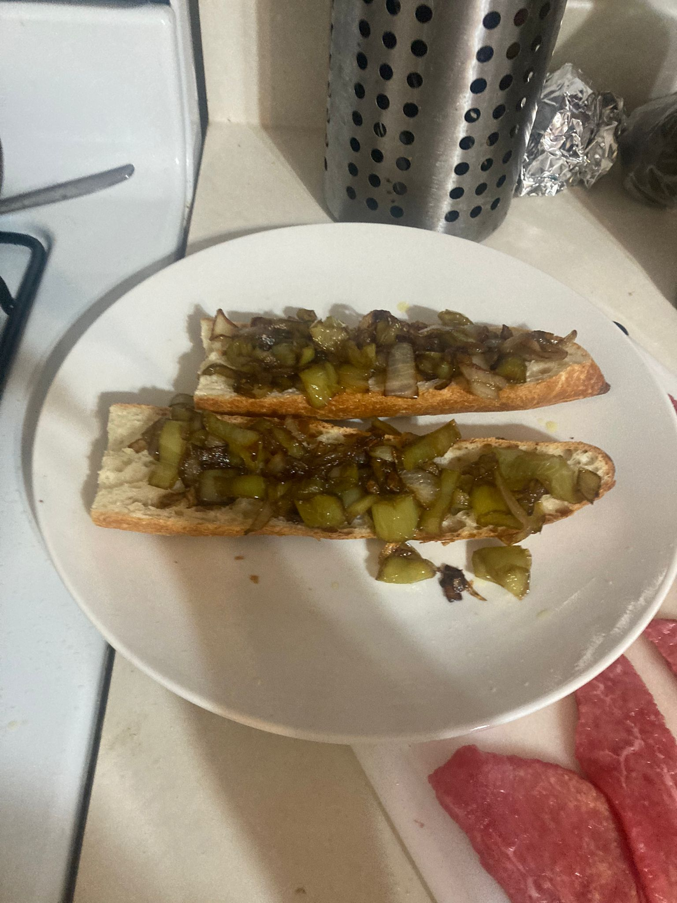
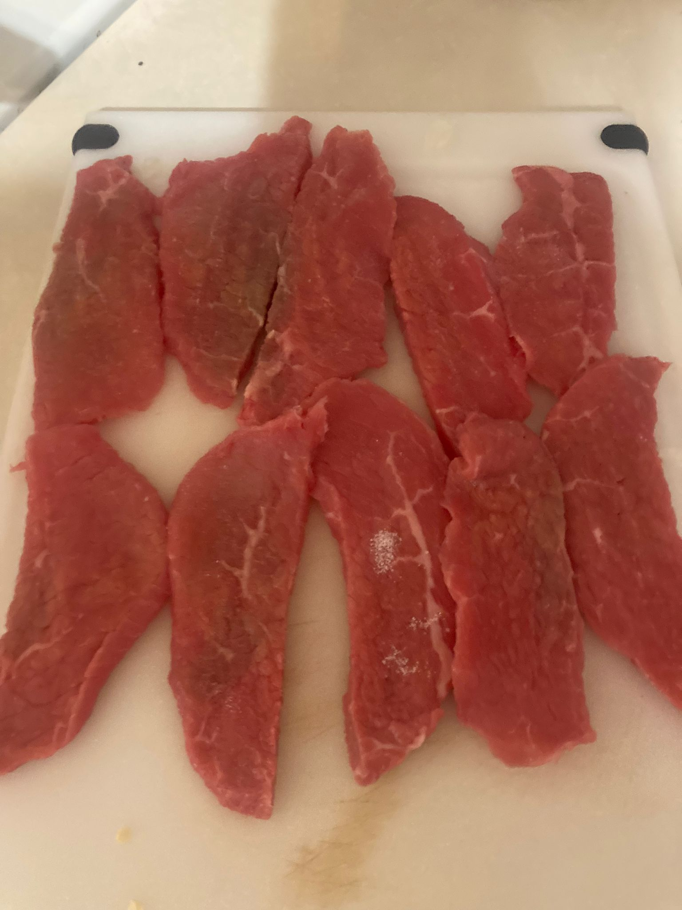 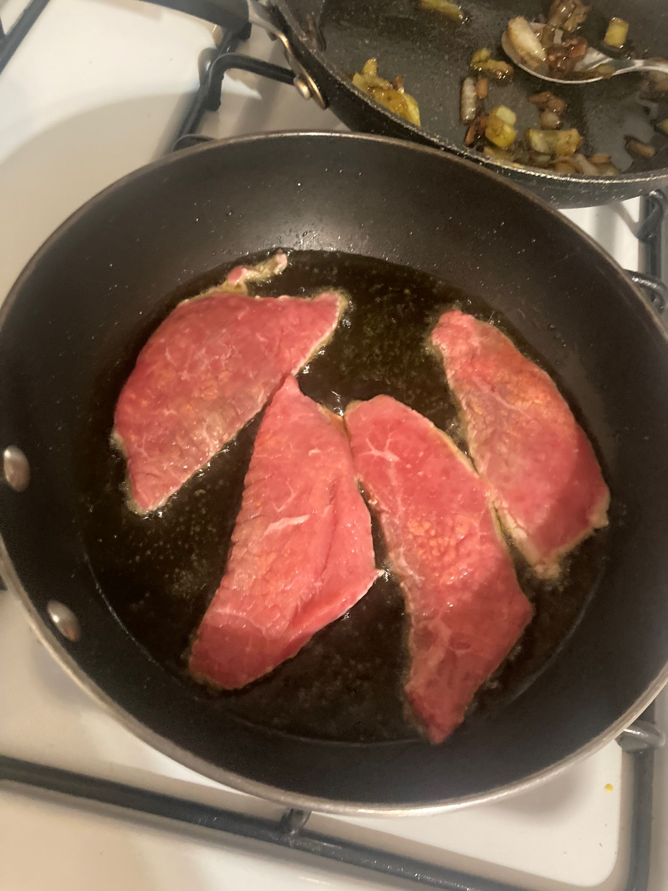 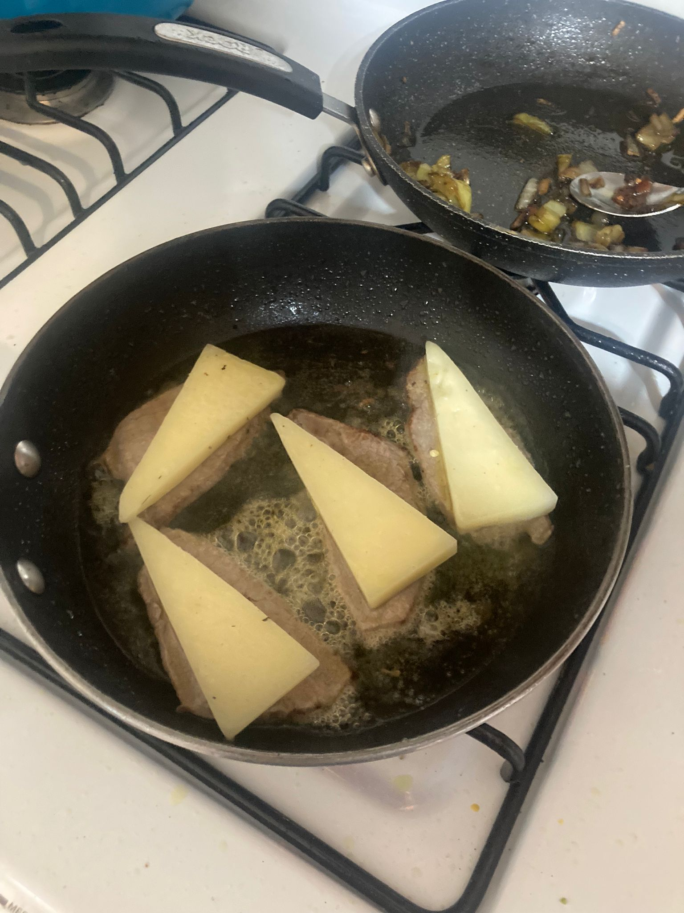
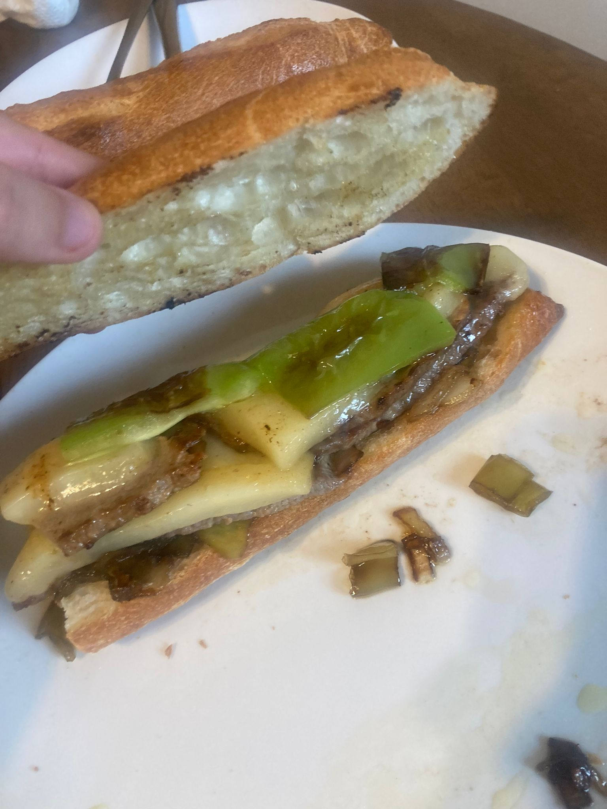